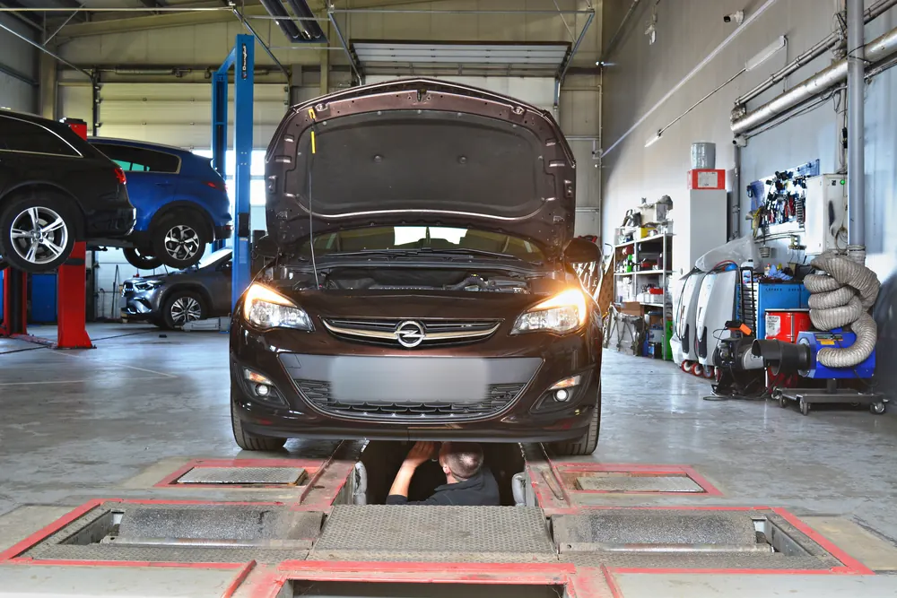
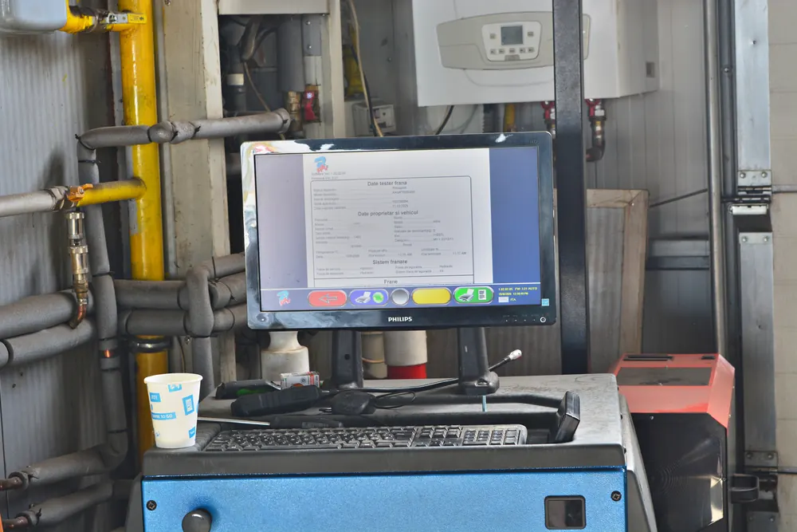

Cum treci ITP-ul fără probleme: ce verifici înainte de inspecție
Inspecția tehnică periodică nu ar trebui să fie o loterie. Cele mai multe mașini care nu trec ITP-ul pică din motive mărunte, pe care proprietarul le putea vedea și rezolva dinainte: un bec ars, o anvelopă uzată, un martor aprins în bord. O jumătate de oră de verificări acasă te poate scuti de un drum în plus și de o reverificare.
În ghidul de mai jos găsești când trebuie făcut ITP-ul, ce acte îți trebuie, ce se verifică pe linia de inspecție, ce poți controla singur înainte și ce se întâmplă dacă mașina nu trece.
Ce este ITP-ul și de ce contează
Inspecția tehnică periodică este verificarea obligatorie prin care se confirmă că mașina poate circula în siguranță și că nu poluează peste limitele admise. Se face doar în stații autorizate de Registrul Auto Român, de către inspectori atestați, iar rezultatul este trecut în sistemul național.
Dincolo de obligație, ITP-ul este una dintre puținele ocazii în care cineva se uită sistematic la frâne, la direcție și la partea de dedesubt a mașinii. Multe probleme care nu dau încă simptome la volan se văd acolo întâi.
La ce interval se face
Pentru autoturisme, termenul depinde de vechimea mașinii, socotită de la prima înmatriculare:
| Vechimea mașinii | Cât de des faci ITP |
|---|---|
| Mașină nouă | Primul ITP la 3 ani de la prima înmatriculare |
| Între 3 și 12 ani | O dată la 2 ani |
| Peste 12 ani | În fiecare an |
| Taxi și școală de șoferi | La 6 luni |
Data până la care e valabilă inspecția este trecută în anexa certificatului de înmatriculare. Nu există o perioadă de grație: din ziua următoare, mașina circulă fără ITP valabil.
Ce riști dacă circuli cu ITP-ul expirat
- Amendă și reținerea certificatului de înmatriculare, pe care îl primești înapoi abia după ce faci inspecția.
- Probleme la asigurare: în caz de accident, lipsa unui ITP valabil îți poate complica serios despăgubirea.
- Timp pierdut: pe lângă inspecție, ai de făcut și drumul pentru recuperarea talonului.
De aceea merită să te programezi cu câteva zile înainte de termen, nu în ultima zi. Dacă apare ceva de reparat, ai timp să rezolvi fără să rămâi cu inspecția expirată.
Actele de care ai nevoie
- Certificatul de înmatriculare (talonul), în original.
- Cartea de identitate a vehiculului. La mașinile în leasing se acceptă de regulă o copie.
- Asigurarea RCA valabilă în ziua inspecției.
- Actul de identitate al persoanei care prezintă mașina. Nu trebuie să fie proprietarul.
Fără unul dintre aceste documente, inspecția nu poate începe, oricât de bine ar arăta mașina.
Ce se verifică pe linia de inspecție
Inspecția urmează aceiași pași la orice stație autorizată. Pe scurt:
- Identificarea: seria de șasiu și datele mașinii sunt comparate cu cele din acte.
- Frânele: pe standul cu role se măsoară forța de frânare la fiecare roată, diferența dintre roțile aceleiași punți și frâna de mână.
- Direcția și suspensia: din canal, inspectorul caută jocuri la articulații, bucșe, capete de bară și rulmenți.
- Luminile: funcționarea tuturor becurilor și reglajul farurilor.
- Emisiile: analizor de gaze la benzină, opacimetru la diesel.
- Caroseria și șasiul: coroziune avansată, elemente desprinse, scurgeri de lichide.
- Echipamentul: anvelope, parbriz, oglinzi, ștergătoare, centuri, claxon.


Ce poți verifica singur, acasă
Nu ai nevoie de scule pentru cele mai multe dintre aceste verificări. Fă-le la lumina zilei, cu cineva care să te ajute la lumini.
Luminile
- Poziții, fază scurtă, fază lungă, semnalizări, avarii, frână (inclusiv a treia lampă), marșarier, ceață și lumina plăcuței de înmatriculare.
- Farurile să nu fie crăpate sau mate. Un far îngălbenit poate fi lustruit.
- Becurile să fie de tipul prevăzut pentru far. Kiturile de xenon sau LED montate în faruri de halogen sunt motiv de respingere.
Anvelopele
- Adâncimea profilului peste limita legală de 1,6 mm, pe toată lățimea.
- Aceeași dimensiune și același tip pe roțile unei punți.
- Fără crăpături, tăieturi sau umflături pe flancuri.
- Dimensiunile să corespundă cu cele admise pentru mașină.
Vizibilitatea
- Parbrizul fără fisuri în zona din fața șoferului.
- Ștergătoarele să curețe fără dungi, iar instalația de spălare să aibă lichid și să pulverizeze.
- Oglinzile întregi și bine fixate.
- Foliile de pe parbriz și de pe geamurile din față trebuie să fie omologate. Altfel, se scot înainte de inspecție.
Bordul și habitaclul
- Niciun martor de avarie aprins: motor, ABS, airbag, ESP.
- Centurile să se blocheze la smucitură și să se retragă complet.
- Claxonul să funcționeze.
- Frâna de mână să țină mașina pe loc după câteva trepte.
Sub capotă și sub mașină
- Fără pete proaspete de ulei sau de lichid de răcire sub mașină.
- Bateria bine fixată în suportul ei.
- Toba de eșapament întreagă, fără zgomot de spartă.
Motivele cele mai dese de respingere
- Lumini: becuri arse sau faruri reglate greșit.
- Emisii peste limită, mai ales la diesel.
- Frânare inegală între roțile aceleiași punți.
- Jocuri la direcție și suspensie: pivoți, bucșe, capete de bară.
- Anvelope uzate sau nepotrivite.
- Martori aprinși în bord.
- Scurgeri de ulei sau de alte lichide.
- Coroziune avansată la praguri sau la elementele de rezistență.
Emisiile la mașinile diesel
La diesel, proba de noxe este cea care dă cele mai multe emoții. Câteva lucruri ajută:
- Vino cu motorul cald. Un drum de 20 - 30 de minute înainte de inspecție, din care o parte în afara orașului, ajută motorul și filtrul de particule să ajungă la temperatura de lucru.
- Filtru de aer curat și ulei schimbat la termen.
- Filtrul de particule și catalizatorul trebuie să existe. Lipsa lor este motiv de respingere.
- Fum negru la accelerare înseamnă de obicei injectoare obosite, o supapă EGR înfundată sau probleme la admisie. Acestea nu se rezolvă cu aditivi turnați în rezervor cu o zi înainte.
Modificări care te pot încurca
Tot ce diferă față de cum a ieșit mașina din fabrică trebuie să fie omologat și, unde e cazul, trecut în acte. Cele mai dese situații:
- Instalație GPL neînscrisă în cartea de identitate a vehiculului sau cu verificarea rezervorului expirată.
- Cârlig de remorcare montat fără omologare.
- Jante și anvelope de alte dimensiuni decât cele admise.
- Folii neomologate pe parbriz și pe geamurile din față.
- Faruri, stopuri sau becuri fără marcaj de omologare.
- Suspensie coborâtă sau evacuare modificată.
Cum citești raportul de inspecție
Nu orice observație din raport înseamnă că mașina a picat. Defectele sunt împărțite în trei categorii, după cât de mult afectează siguranța:
| Categoria | Ce înseamnă |
|---|---|
| Defect minor | Nu afectează siguranța. Mașina trece inspecția, dar defectul e notat și merită remediat. |
| Defect major | Poate afecta siguranța sau mediul. Mașina este respinsă și revine la reverificare după reparație. |
| Defect periculos | Risc direct și imediat. Mașina este respinsă și nu ar trebui să mai circule până la reparație. |
Păstrează raportul chiar dacă mașina a trecut. Defectele minore notate acolo sunt lista de lucruri la care merită să te uiți până la următoarea inspecție.
Ce se întâmplă dacă mașina nu trece
Primești un raport cu defectele constatate. Ai la dispoziție 30 de zile ca să le remediezi și să revii la reverificare, la care se controlează de regulă doar punctele respinse. După 30 de zile, inspecția se reia de la capăt.
Unele defecte sunt considerate periculoase, de exemplu frâne care nu funcționează sau o direcție cu joc mare. Cu ele, mașina nu ar trebui să mai circule până la reparație, iar soluția corectă este transportul pe platformă.
Aici se vede avantajul unui service cu stație ITP în aceeași curte: defectul găsit la inspecție poate fi reparat pe loc, iar mașina se întoarce pe linie fără alte drumuri.
Verificarea dinaintea inspecției
Dacă nu ești sigur că mașina trece, o verificare prealabilă te scutește de surprize. Un mecanic se uită la aceleași lucruri pe care le va controla inspectorul: frâne, jocuri la direcție și suspensie, lumini, scurgeri, emisii. Afli din timp ce ar trebui reparat și cât ar costa, în loc să afli pe linia de inspecție.
Merită mai ales la mașinile de peste 10 ani, la cele care au stat mult nefolosite și la cele care au un martor aprins de ceva vreme.
Mașini cu GPL, hibride și electrice
- GPL: instalația trebuie să fie înscrisă în cartea de identitate a vehiculului, iar rezervorul să fie în termenul de valabilitate. Se verifică și etanșeitatea instalației.
- Hibride: inspecția este aceeași ca la o mașină clasică, inclusiv proba de emisii. Motorul termic trebuie să pornească în timpul probei, ceea ce la unele modele cere o procedură anume.
- Electrice: nu există probă de emisii, dar frânele, direcția, suspensia, luminile și anvelopele se verifică la fel. Pentru că frânează mult prin recuperare, discurile se folosesc rar și pot rugini, lucru care iese la iveală pe standul de frânare.
Mașina a stat mult nefolosită
O mașină care a stat luni întregi în garaj sau în parcare are problemele ei. Înainte de inspecție merită:
- un drum mai lung, cu câteva frânări ferme, ca discurile să se curețe de rugină;
- verificarea presiunii și a flancurilor la anvelope, care se deformează când stau pe loc;
- verificarea bateriei și a tuturor luminilor, pentru că becurile și contactele se oxidează;
- o privire sub mașină, după pete de lichide și după furtunuri sau cabluri roase.
Ce merită întrebat la programare
- cât durează inspecția și dacă poți aștepta pe loc;
- dacă stația face inspecții pentru categoria mașinii tale (de exemplu autoutilitare sau mașini cu GPL);
- dacă există posibilitatea unei verificări înainte de inspecție;
- ce se întâmplă cu reverificarea, dacă mașina nu trece din prima.
Cu o săptămână înainte: lista scurtă
- Verifică data din anexa talonului și fă programarea.
- Caută actele: talon, cartea de identitate a vehiculului, RCA, buletin.
- Controlează toate luminile și schimbă becurile arse.
- Uită-te la anvelope: profil, flancuri, dimensiuni.
- Verifică ștergătoarele și completează lichidul de parbriz.
- Dacă ai un martor aprins, mergi la diagnoză înainte, nu după.
- În ziua inspecției, vino cu motorul cald și cu mașina curată, inclusiv numerele de înmatriculare și seria de șasiu.
Cinci greșeli întâlnite des
- Programarea în ultima zi, fără timp pentru o eventuală reparație.
- Martorul „check engine" ignorat, în speranța că nu se observă.
- Erori șterse cu un tester chiar înainte de inspecție. Cauza rămâne, iar martorul revine.
- Becuri LED ieftine puse în faruri care nu sunt făcute pentru ele.
- Acte uitate acasă sau RCA expirat de câteva zile.
ITP la GAV Auto
La noi, stația ITP este în aceeași locație cu atelierul. Poți face o verificare înainte de inspecție, iar dacă apare ceva de reparat, mecanicii noștri rezolvă pe loc. Detalii pe pagina de ITP în Brașov, iar pentru reparații vezi mecanică auto.
Întrebări frecvente
Ce acte îmi trebuie pentru ITP?
Certificatul de înmatriculare, cartea de identitate a vehiculului, asigurarea RCA valabilă în ziua inspecției și actul de identitate al persoanei care aduce mașina.
La ce interval se face ITP-ul?
La autoturisme: primul ITP la 3 ani de la prima înmatriculare, apoi o dată la 2 ani până la 12 ani vechime, iar după aceea în fiecare an.
Pot face ITP-ul înainte să expire?
Da. Îl poți face oricând înainte de termen, iar noua perioadă de valabilitate se calculează de la data inspecției.
Trece mașina de ITP cu martorul „check engine" aprins?
De regulă nu. Un martor de avarie aprins este motiv de respingere, așa că merită o diagnoză înainte de inspecție.
Ce fac dacă mașina nu trece ITP-ul?
Ai 30 de zile ca să remediezi defectele din raport și să revii la reverificare. După acest termen, inspecția se reia de la capăt.
Cât durează un ITP?
Inspecția în sine durează de regulă sub o oră. Cu programare, nu ai timp de așteptare.
Trebuie să fie proprietarul prezent la ITP?
Nu. Mașina poate fi adusă de oricine are actele ei și un act de identitate.